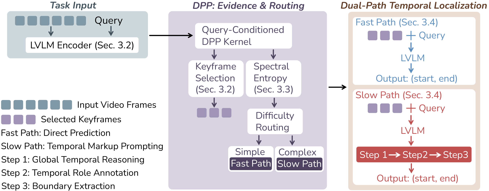

Query-Conditioned DPP
DART selects frames that are relevant to the query and diverse across time, so the LVLM sees the key stages rather than redundant frames.
Problem
Existing zero-shot VTG methods often score frames against the query independently. This works for simple events, but it misses event order and causal structure in multi-stage queries.
DART couples query-conditioned keyframe selection with a routing signal from the DPP spectrum. Simple queries use a fast direct path, while complex queries use Temporal Markup Prompting for structured reasoning.
Query: "He dismounts after flipping and lands on the mat." The correct segment covers flipping, dismounting, and landing.
Method
The method first builds compact temporal evidence, then routes each query by estimated difficulty, and finally localizes the event with either a fast path or a slow reasoning path.

DART selects frames that are relevant to the query and diverse across time, so the LVLM sees the key stages rather than redundant frames.
Spectral entropy estimates the structure of the selected temporal evidence and routes hard queries to structured reasoning.
The slow path asks the LVLM to analyze the event, tag frame roles, and extract temporal boundaries from the marked sequence.
Results
The tables below report the main IID and OOD mIoU numbers from the paper.
| Method | Charades mIoU | ActivityNet mIoU |
|---|---|---|
| TFVTG | 44.51 | 34.10 |
| TAG | 45.69 | 36.55 |
| DART | 48.93 | 39.89 |
| Split | TAG mIoU | DART mIoU |
|---|---|---|
| Charades OOD-1 | 44.7 | 48.1 |
| Charades OOD-2 | 44.6 | 47.8 |
| ActivityNet OOD-1 | 36.2 | 39.7 |
| ActivityNet OOD-2 | 36.1 | 39.5 |
Citation
@inproceedings{zhang2026dart,
title = {DART: Difficulty-Adaptive Routing for Zero-Shot Video Temporal Grounding},
author = {Zhang, Zhengbo and Huang, Mark He and Tu, Zhigang and Yang, Ming-Hsuan},
booktitle = {European Conference on Computer Vision},
year = {2026}
}